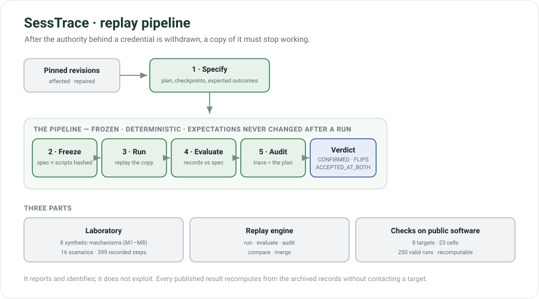

SessTrace
Evidence-first replay checks for the withdrawal of session authority.


Evidence-first replay checks for the withdrawal of session authority.


SessTrace checks one property of software that issues sessions or tokens: after the authority behind a credential has been withdrawn, a copy of that credential must stop working. The withdrawal can be a logout, the end of a configured lifetime, a password change, a disabled account or a deleted grant.
It does this by replay. A plan logs a user in, copies the credential, lets the event happen, presents the copy again and records what came back. The same plan is run against selected pinned affected and repaired revisions. The expected outcome of every step is written down and hashed before the first request is sent.

Eight mechanisms, each in a vulnerable and a fixed variant · 399 recorded HTTP steps, reproduced byte for byte.
Eight real projects at an affected and a repaired revision · 250 valid runs, 22 as written down before the run.
Pure Python 3.7+, standard library only. 145 tests. No network needed to re-read the archived records.
In seven checks the copied credential still works before the repair and is refused after it — the behaviour the fix changes.
Eight synthetic mechanisms (M1–M8) on loopback HTTP, each vulnerable and fixed. sesstrace lab run, sesstrace lab verify.
Driver, evaluator and audit for plans run against real software. run · evaluate · audit · compare · merge.
Eight public targets, their frozen specifications and the records of 262 attempts (250 valid runs). Recompute them without contacting a target.
Each target is tested at a pinned affected and repaired revision associated with one published CVE. These are observations on named old releases under one configuration each, not statements about current versions and not a detection rate.
| Target | Language | Revisions | CVE | |
|---|---|---|---|---|
| T1 | @fastify/session | JavaScript | 8b6241c, 0495ce5 | CVE-2024-35220 |
| T2 | @fastify/secure-session | JavaScript | 7b6eebe, 56d6664 | CVE-2024-31999 |
| T3 | aiohttp-session | Python | faadf10, 1b356f0 | CVE-2018-1000814 |
| T4 | rack-session | Ruby | c837aff, c28c4a8 | CVE-2025-46336 |
| T5 | Vikunja | Go | 2.2.2, 2.3.0 | CVE-2026-35594 |
| T6 | FUXA | JavaScript | 1.3.2, 1.3.3 | CVE-2026-65984 |
| T7 | Directus | TypeScript | 10.10.7, 10.11.0 | CVE-2024-34709 |
| T8 | Kanboard | PHP | 1.2.42, 1.2.43 | CVE-2024-55603 |
No installation is needed for the tests, the laboratory or re-reading the archived records.
git clone https://github.com/abdullahzarshaid/sesstrace
cd sesstrace
python -m unittest # the whole test suite, no installation
PYTHONPATH=src python -m sesstrace lab verify # reproduce the synthetic traces